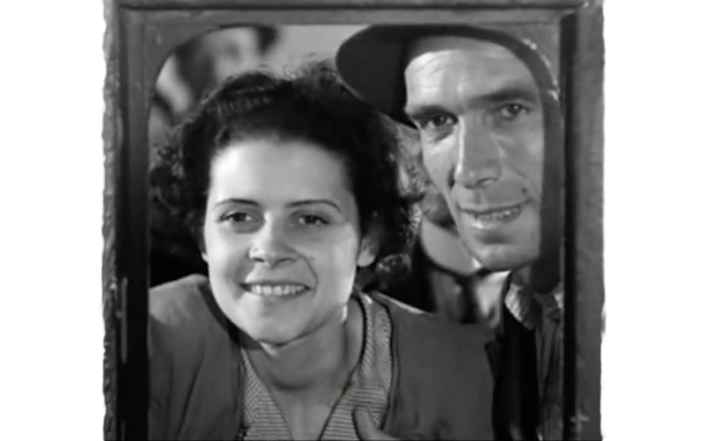
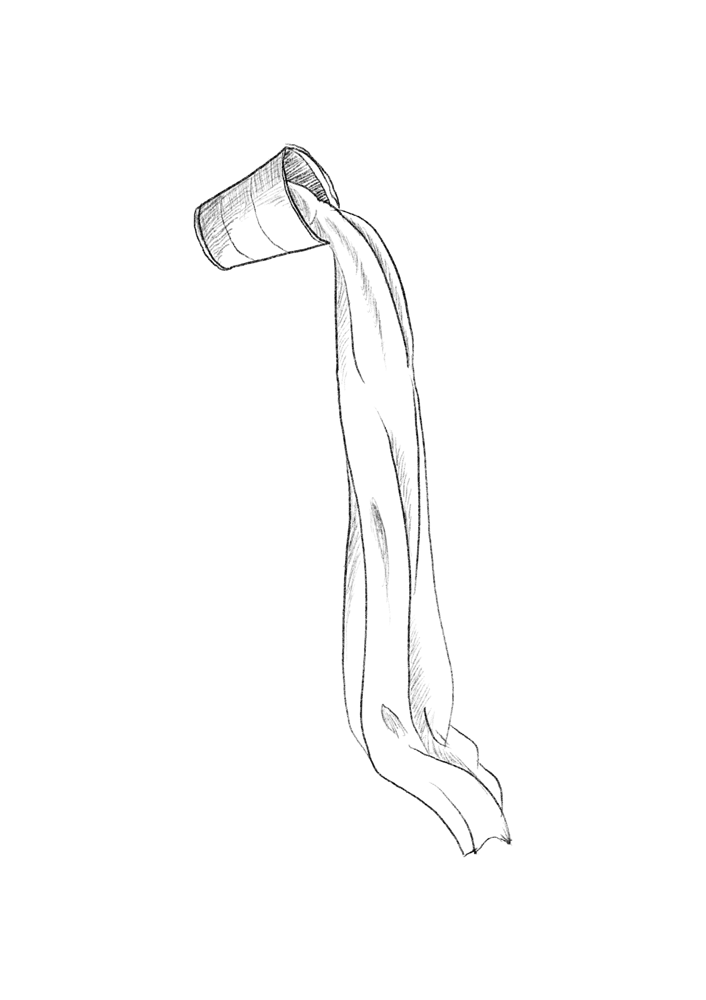
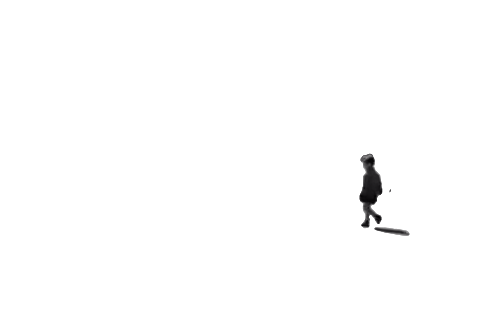
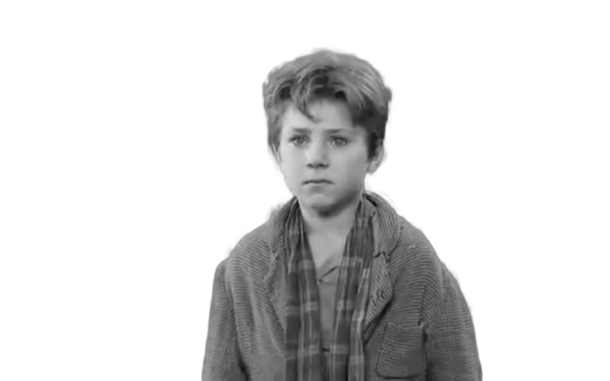
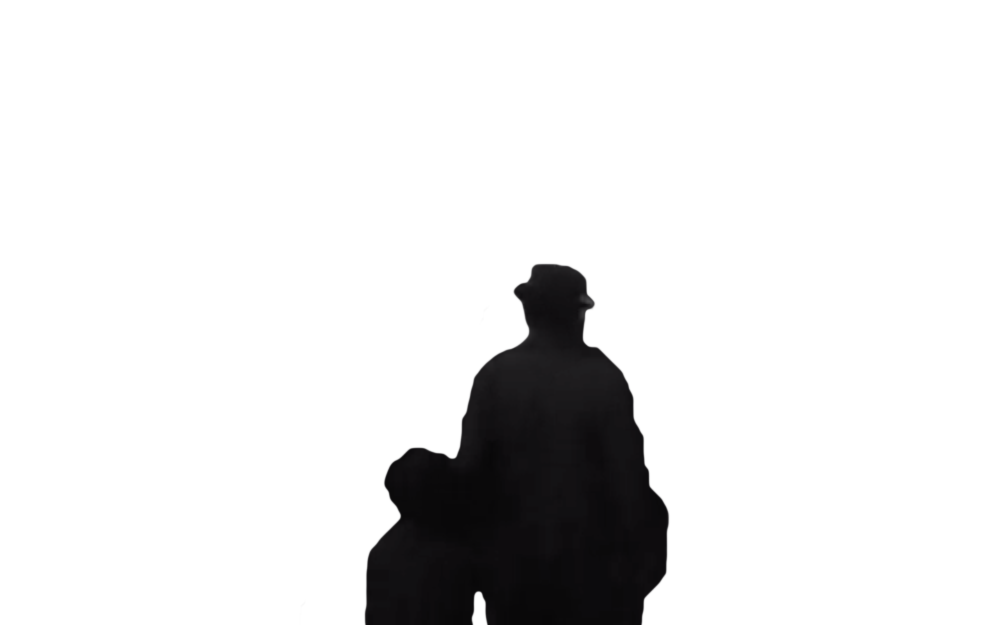
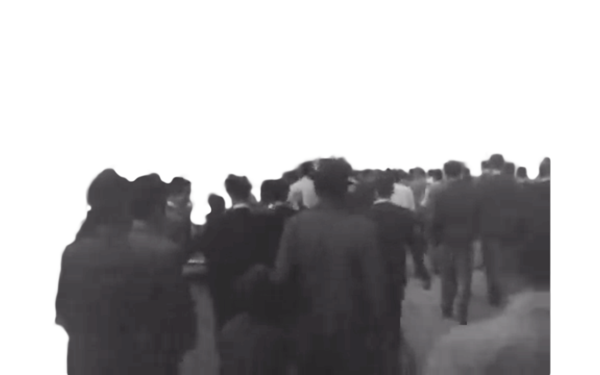

In post-WII Italy, a large crowd of men gathers around an employment office in Valmelaina. Antonio, a family man, is desperate for work in the lackluster Italian economy.
Unfortunately, Antonio pawned his bike to feed his family and tells the officer that he will retrieve it in a few days. Because the job can easily be offered to another prospective employee, the unsympathetic officer unequivocally tells Antonio, “No bicycle, no job.” The other men begin shouting, declaring they have bicycles and can take Antonio’s job. Desperate, Antonio lies and says he is prepared to report to work as soon as possible with a bike.
Antonio then finds his wife, Maria. He informs her of the job offer but says he can’t accept it, lamenting, “Damn the day I was born!” Maria dismisses Antonio's hysteria and pessimism; she rationally decides to sell their bed sheets for extra money. She reasons, “We can sleep without sheets,” and they later get offered 7,500 Italian lire for the linen, which is more than enough for Antonio to repossess his bike from the shop.
On Antonio’s first day, his co-worker instructs him on how to properly paste up posters. In this case, it’s a poster of 1940s Hollywood icon Rita Hayworth.
Later Antonio becomes so engrossed in his work, he fails to pay careful attention to his bike, and a young man jumps on Antonio’s bike and quickly rides off with it.
In an attempt to chase after the man, Antonio latches himself onto a moving automobile, but he loses the thief in the tunnels. Devastated, Antonio reports the stolen bike to the unsympathetic and useless police, who have Antonio file a complaint. The officer tells Antonio to search for the bike himself, to which Antonio replies, “Look all over Rome? What's the point of even filling out a complaint?" Because Antonio filed a complaint and the police received the bike’s serial number, the officer claims that they will be able to proceed with the investigation if the bike shows up, but there is not much more he or Antonio can do in the meantime.

Antonio friend Baiocco tells him to search in another market, Porta Portese, but he and the others cannot join him this time. At Porta Portese, Antonio spots an elderly man and a young man conversing, and he suddenly recognizes one of them—the younger man—as the thief. Antonio and Bruno begin to chase them, and they eventually stumble upon the older man. Antonio approaches the older man about the thief, who pretends to be oblivious and walks away.
It’s now late afternoon, and Antonio begins to lose hope, as the chance to retrieve his bike has seemingly slipped away from him. He projects his frustration onto Bruno and slaps him when he begins to question his father. A tearful Bruno asks Antonio, “Why did you hit me?” and Antonio says Bruno deserved the punishment.
Antonio and Bruno separate to look for the old man. Near a lake, Antonio spots a crowd shouting about a drowning child. Not knowing the whereabouts of Bruno, Antonio begins to panic, but Bruno is thankfully safe and sound, and Antonio realizes how important his son is to him. Deciding to momentarily forget about the bike, the father and son go to a restaurant. Antonio justifies this irresponsible decision, saying, “why kill myself worrying when I’ll end up just as dead anyway?” The restaurant is filled with bourgeois families, which reminds Antonio and Bruno of their lower socioeconomic status. By the end of the meal, Antonio begins to think sensibly and realizes he must find his bike if he wants to provide for his family.
Antonio and Bruno then stumble upon the young thief immediately after their visit with the seer. Antonio chases him into a brothel and drags him out into the street. The young man denies the accusations, and the neighbors in the street form a hostile crowd and tell Antonio he can’t accuse anyone of a crime without evidence or witnesses.
Antonio leaves the area in despair, and the crowd keeps shouting at him.
Antonio and Bruno sit on a curb outside of a packed football stadium. Hundreds of bicycles surround the duo, and Antonio spots an unattended one in the distance. Conflicted, he paces back and forth and gives Bruno some money to take a streetcar home.
He then approaches the unguarded bicycle and jumps on it.
The outcry over his attempted theft is immediate, and Bruno—who missed the streetcar—watches his father forced off the bike by a group of men. Bruno runs into the angry crowd, weeping, “Papa! Papa!” The men begin to muscle Antonio toward the police station.
The owner of the bicycle notices Bruno, and compassionately decides to not press charges against Antonio. Antonio and Bruno walk amid a crowd, and Antonio holds his head in shame, trying not to cry. Bruno tearfully grasps his father’s hand, and they continue walking home.
 